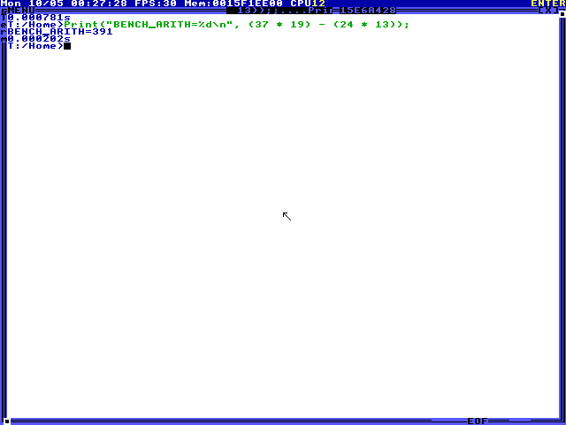
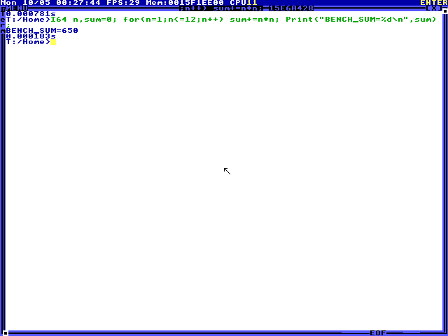
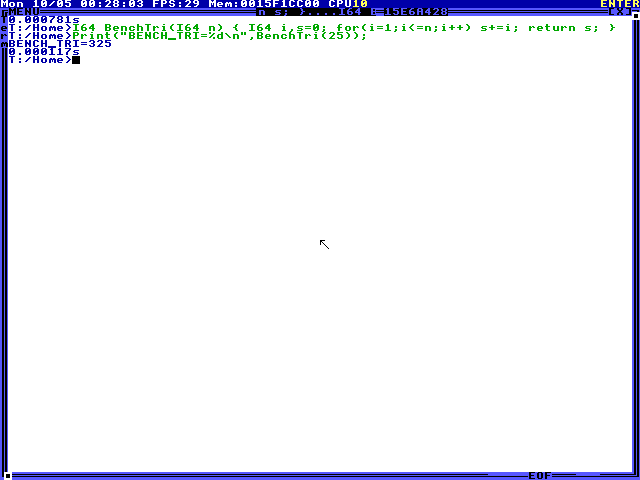
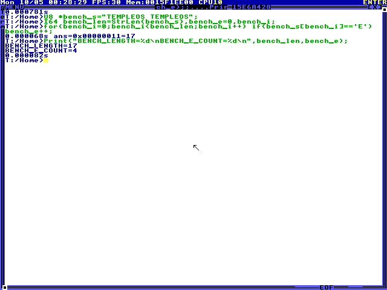
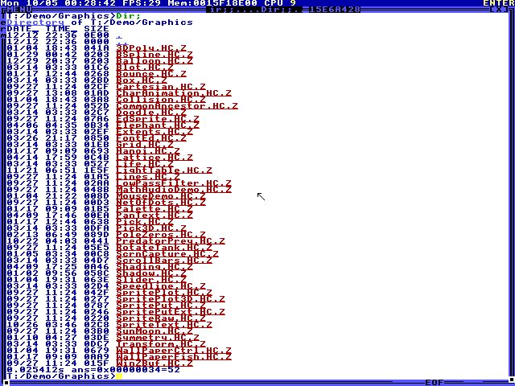
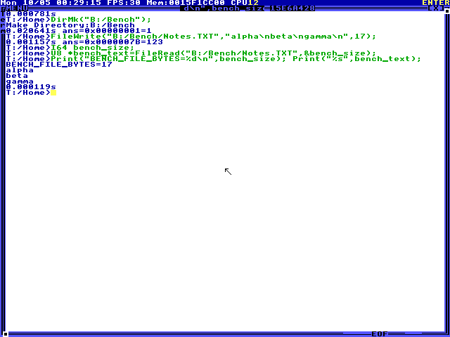

TempleOS CUA report
cua / openai/gpt-6.1-sol
Created 2026-10-05T00:27:11.588954+00:00
6Passed
0Failed
0Needs review
0Grader errors
Execution outcomes: 6 completed.
OCR grades are heuristic visual evidence. Command echo or source text can satisfy a match; guest state is not verified.
Manual tasks require a reviewer. An execution outcome and a grade describe separate facts.
Evaluate an integer expression in HolyC
Task arithmetic
Grade: passed Execution: completed · Steps: 3 · Elapsed: 16.923 s · Score: 1
Required visual text matched. Heuristic visual evidence only: printed constants, source text or a fake listing can satisfy text checks; guest state is not verified.
input tokens: 4006, output tokens: 190, total tokens: 4196
- Heuristic visual evidence only: printed constants, source text or a fake listing can satisfy text checks; guest state is not verified.
- Exact stock TempleOS 8x8 glyph decoding; unknown cells remain U+FFFD.
- grader-ocr.txt
Trajectory (JSONL)

Sum the first twelve squares with a loop
Task sum_of_squares
Grade: passed Execution: completed · Steps: 3 · Elapsed: 15.924 s · Score: 1
Required visual text matched. Heuristic visual evidence only: printed constants, source text or a fake listing can satisfy text checks; guest state is not verified.
input tokens: 4009, output tokens: 206, total tokens: 4215
- Heuristic visual evidence only: printed constants, source text or a fake listing can satisfy text checks; guest state is not verified.
- Exact stock TempleOS 8x8 glyph decoding; unknown cells remain U+FFFD.
- grader-ocr.txt
Trajectory (JSONL)

Define and call a HolyC function
Task triangular_function
Grade: passed Execution: completed · Steps: 3 · Elapsed: 19.279 s · Score: 1
Required visual text matched. Heuristic visual evidence only: printed constants, source text or a fake listing can satisfy text checks; guest state is not verified.
input tokens: 4059, output tokens: 220, total tokens: 4279
- Heuristic visual evidence only: printed constants, source text or a fake listing can satisfy text checks; guest state is not verified.
- Exact stock TempleOS 8x8 glyph decoding; unknown cells remain U+FFFD.
- grader-ocr.txt
Trajectory (JSONL)

Measure a string using TempleOS routines
Task string_statistics
Grade: passed Execution: completed · Steps: 2 · Elapsed: 25.624 s · Score: 1
Required visual text matched. Heuristic visual evidence only: printed constants, source text or a fake listing can satisfy text checks; guest state is not verified.
input tokens: 2575, output tokens: 197, total tokens: 2772
- Heuristic visual evidence only: printed constants, source text or a fake listing can satisfy text checks; guest state is not verified.
- Exact stock TempleOS 8x8 glyph decoding; unknown cells remain U+FFFD.
- grader-ocr.txt
Trajectory (JSONL)

Navigate to the graphics examples
Task directory_navigation
Grade: passed Execution: completed · Steps: 3 · Elapsed: 13.911 s · Score: 1
Required visual text matched. Heuristic visual evidence only: printed constants, source text or a fake listing can satisfy text checks; guest state is not verified.
input tokens: 3981, output tokens: 193, total tokens: 4174
- Heuristic visual evidence only: printed constants, source text or a fake listing can satisfy text checks; guest state is not verified.
- Exact stock TempleOS 8x8 glyph decoding; unknown cells remain U+FFFD.
- grader-ocr.txt
Trajectory (JSONL)

Write and read a file on a RAM drive
Task file_roundtrip
Grade: passed Execution: completed · Steps: 3 · Elapsed: 31.988 s · Score: 1
Required visual text matched. Heuristic visual evidence only: printed constants, source text or a fake listing can satisfy text checks; guest state is not verified.
input tokens: 4268, output tokens: 316, total tokens: 4584
- Heuristic visual evidence only: printed constants, source text or a fake listing can satisfy text checks; guest state is not verified.
- Exact stock TempleOS 8x8 glyph decoding; unknown cells remain U+FFFD.
- grader-ocr.txt
Trajectory (JSONL)
